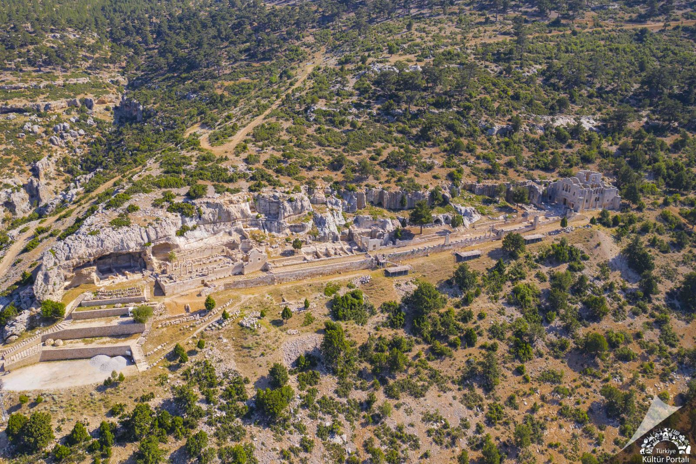
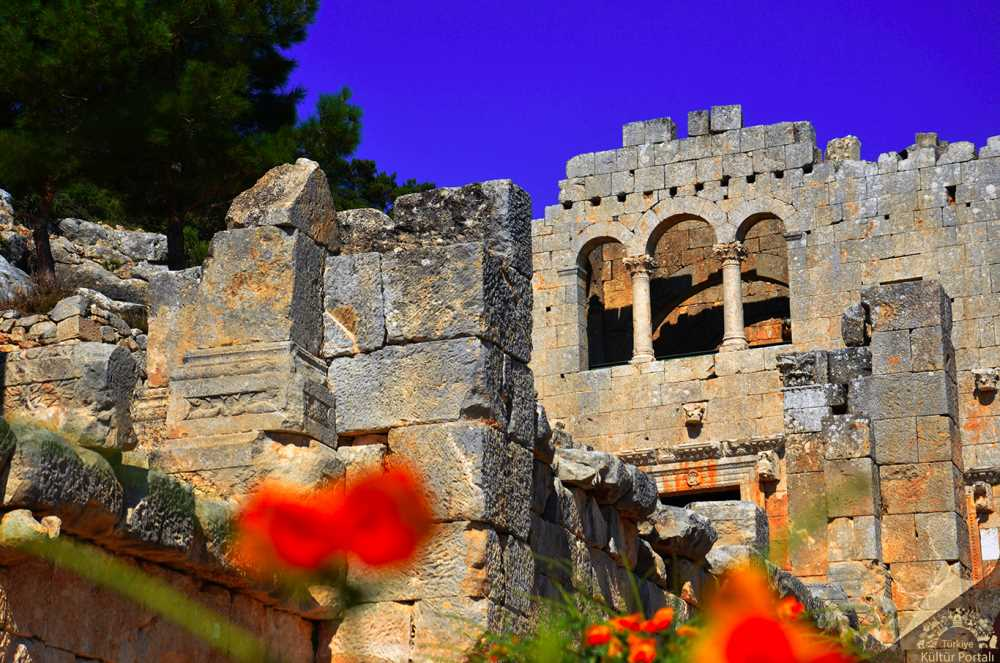
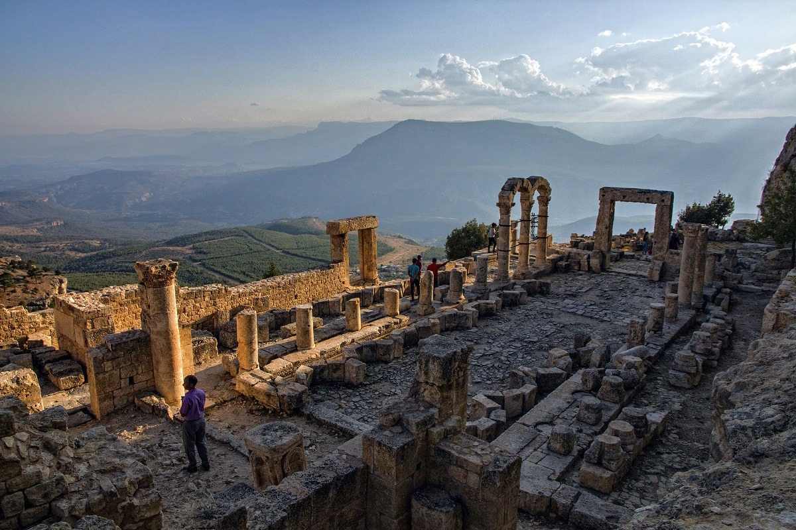

Evliya Çelebi'nin "Ustasının elinden yeni çıkmış gibi duruyor." diye anlattığı Alahan Manastırı, Mersin-Karaman karayolu üzerinde Geçimli Köyü civarındadır. 1300 metre yükseklikte ve Göksu Vadisi'ne bakan dik bir yamaca oturtulmuştur.
Hıristiyanlığın Kapadokya ve Likonya'da (Konya) yayılması sırasında bu yeni dini kabul edenlerin takibe uğraması ve inanmayanlar tarafından öldürülme korkusu, Hz. İsa'ya inananları dağlık bölgelerdeki mağara kaya oyuklarında ibadete zorlamıştır. St. Paul ve yine Tarsus'ta yaşamış Hıristiyanlık öncülerinden Barnabas ile birlikte Hıristiyanlığı yaymak için Konya-Kapadokya ve Antalya-Antakya'ya kadar maceralı yolculuklar yapmıştır. İşte bu iki Hıristiyan Aziz'in gezileri sırasında konakladıkları her yerde anılarına mabetler yapılmıştır. Alahan Manastırı da bunlardan biridir.
440-442 yıllarında yapılmış olduğu tahmin edilen Alahan Manastır Külliyesi; Batı Kilisesi, Manastır, Doğu Kilisesi, kayalara oyulmuş keşiş odacıkları ve çevredeki mezarlardan oluşmaktadır. Kilise binaları Ayasofya ile ortak mimari özellikleri taşımaktadır.

Süslemesinde usta bir taş oymacılığı görülür. İlk kilise korint başlıkla iki dizi sütunla üç nefe ayrılmıştır. Narteksten ana mekana geçilen kapının atkı ve yan dikmeleri kabartmalarla süslüdür. St. Paul ve St. Pierre figürlerinden başka, bir çelengi taşıyan altışar kanatlı Cebrail, Mikail'in simgesel yaratıkları ezişi, kükreyen aslan, kartal ve öküz sembolleri, İncil yazılarının tasvirleri, üzüm salkımları, asma yaprakları ve balık motifleri zengin bir şekilde tasvir edilmiştir.
Kiliselerin doğusundaki geniş avlunun güneyinde dinsel törenlerin yapıldığı dehliz 11 metre uzunluğunda kemerli ve sütunlu bir galeri şeklindedir. Galerinin ortasında kalabalık kabartma süsleme ile her yanı işli büyük bir niş bulunmaktadır. Galeride apsisli vaftizhane ve karşısında Alahan Manastırı'nın en görkemli yapısı olan mezarlar bulunmaktadır. Bu mezarların kuzey duvarı kayaya yontulmuştur, üst örtüsü yoktur. Ana nefin ortası ilginçtir. Burası paye ve sütunlara oturan dört kemerle örtülü kare planlı bir kule biçimindedir. Kule yukarıda sekizgene dönüştürülmüştür. Kapı çerçevesi süslüdür.